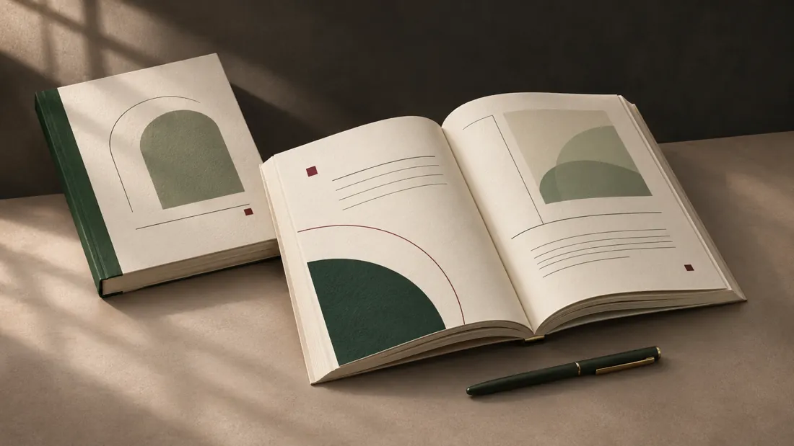
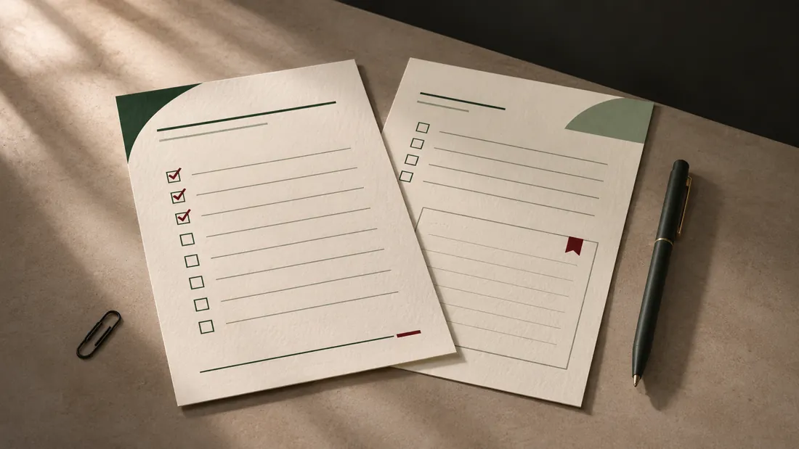
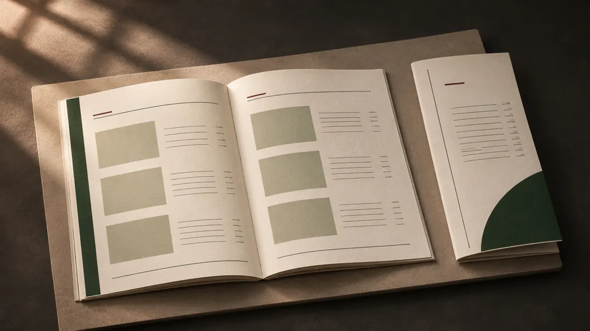
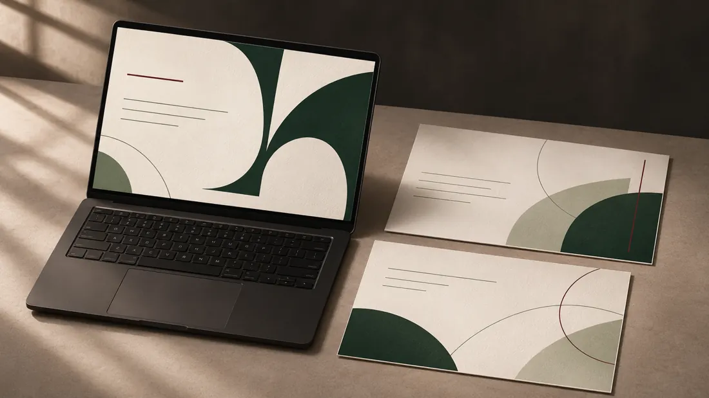
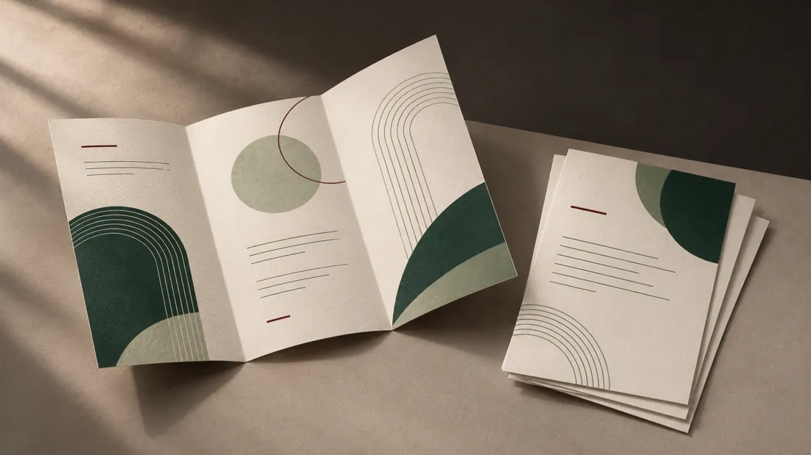

01Оформление для вас
Гайды и методички
Соберу ваши знания в понятный материал: руководство, пособие, рабочую тетрадь или сопровождение к курсу. Помогу выстроить структуру и оформить содержание.

HRNEIROWAY / Для экспертов и личного бренда
Ваши знания, услуги и идеи —
в понятных и выразительных материалах
Соберу ваши знания в понятный материал: руководство, пособие, рабочую тетрадь или сопровождение к курсу. Помогу выстроить структуру и оформить содержание.

Выделю главное и разложу действия по шагам. Оформлю короткий материал, который удобно сохранить, распечатать или открыть с телефона.

Помогу представить услуги, товары и условия без перегруженных таблиц. Продуманный порядок, заметные цены и единое оформление.

Оформлю презентацию для выступления, знакомства с компанией, представления услуги или обучения. Можно начать с готового текста или разрозненных заметок.

Соберу информацию в компактный печатный или электронный формат. Расставлю акценты и подготовлю макет под согласованные требования типографии.

Разработаю небольшие материалы с вашим характером: контактную карточку, набор стикеров или календарь. Согласуем формат, содержание и способ использования.
[02] Примеры оформления
Каждый проект — отдельная история.
Откройте карточку, чтобы посмотреть все слайды
Здесь — мои работы для разных задач и аудиторий. Состав и содержание вашего проекта согласуем отдельно
[03] Ваша задача
Можно прийти с готовым текстом, черновиком или идеей. Расскажите, кому нужен материал и как вы хотите его использовать
Написать в Telegram ↗hrneiroway@yandex.ru